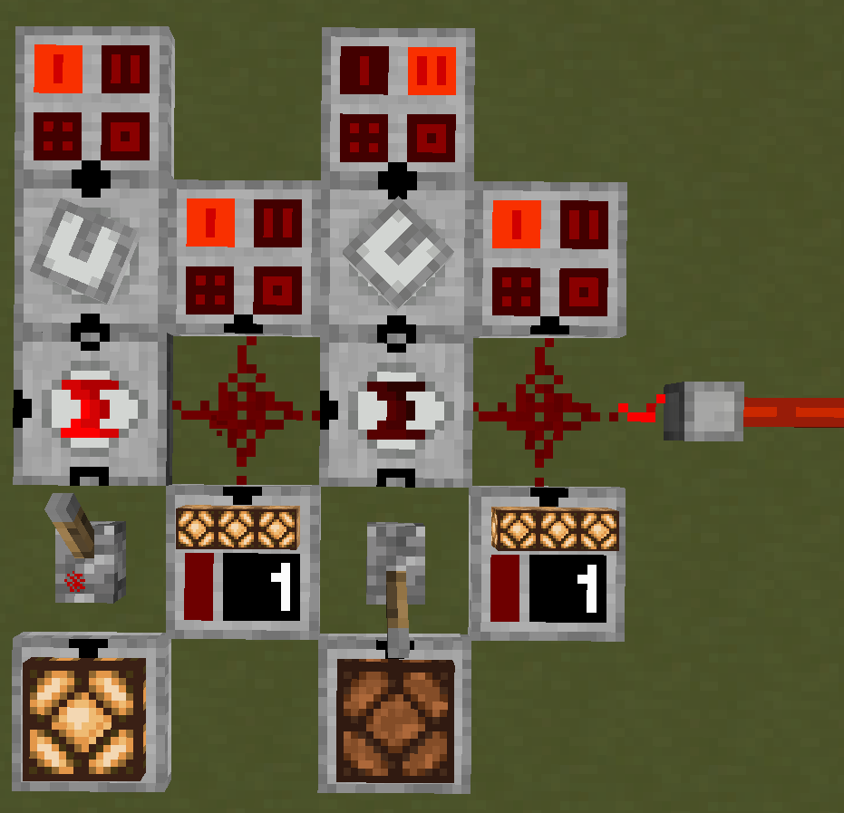

Overview
The Binary Encoder allows multiple digital signals to be transmitted through a single Redstone Wire or RedCu Wire by utilizing binary representation of signal strength.
Redstone signal values range from 0 to 15, which corresponds to 4 bits in binary. The Binary Encoder enables the player to control these bits individually, effectively turning a single wire into a 4-channel digital bus.
Each bit represents a separate channel, allowing up to four independent signals to be transmitted simultaneously. The encoded signal can later be converted back into separate outputs using a Binary Decoder.
Operation
The Binary Encoder reads:
- Pin Mark A - Bus input signal
- Pin Mark B - Binary filter signal
- Pin Mark C - Control signal
All inputs are standard Redstone signals (values from 0 to 15).
The mark lights up when a signal at Pin Mark C is greater than 0.
The output depends on the signal at Pin Mark C:
- If Pin Mark C = 0, the signal from Pin Mark A is passed directly to the output.
- If Pin Mark C > 0, a binary OR operation is performed between Pin Mark A and Pin Mark B.
Binary OR essentially passes each A and B bit pair through an OR Gate. For example:
A 0110 ( 6)
B 1010 (10)
O 1110 (14)
The resulting value is then output as a Redstone signal.
Example

Consider encoding two independent signals into a single bus. Each channel corresponds to a specific binary value:
- 1 (0001)
- 2 (0010)
- 4 (0100)
- 8 (1000)
These values act as binary filters used to encode signals. A Hexadecimal Indicator is useful for seeing active channels.
In this example, the filter values are provided from Analog Source:
- Left encoder uses filter 1
- Right encoder uses filter 2
The left encoder receives no input on the bus and a > 0 signal from Pin Mark C:
A 0000 (0)
B 0001 (1)
O 0001 (1)
The right encoder receives the bus signal from the left encoder, but because it receives 0 at Pin Mark C, the signal is not modified and it passes through.
This produces a combined signal that can be decoded later using a Binary Decoder (see example there).
Multiple channels can be activated at once by combining filter values. For example, enabling channels 4 and 2 can be done with a single binary filter with value:
4 (0100) + 2 (0010) = 6 (0110)
Applying this filter, when Pin Mark C receives a > 0 signal:
A 0001 (1)
B 0110 (6)
O 0111 (7)
This activates channels 4 and 2 while preserving existing signals.
Configuration
The pins can be configured to face any side by right-clicking the block.
| Pin Mark A | Bus Input |
| Pin Mark B | Binary Filter |
| Pin Mark C | Control |
Crafting
| Ingredients | RedCu Crafter Recipe |
| 1 Buffer Gate | |
| 1 One Way Through Gate | |
| 1 OR Gate |
Version Log
| Version | Description |
| 0.3.1 | Introduced. |